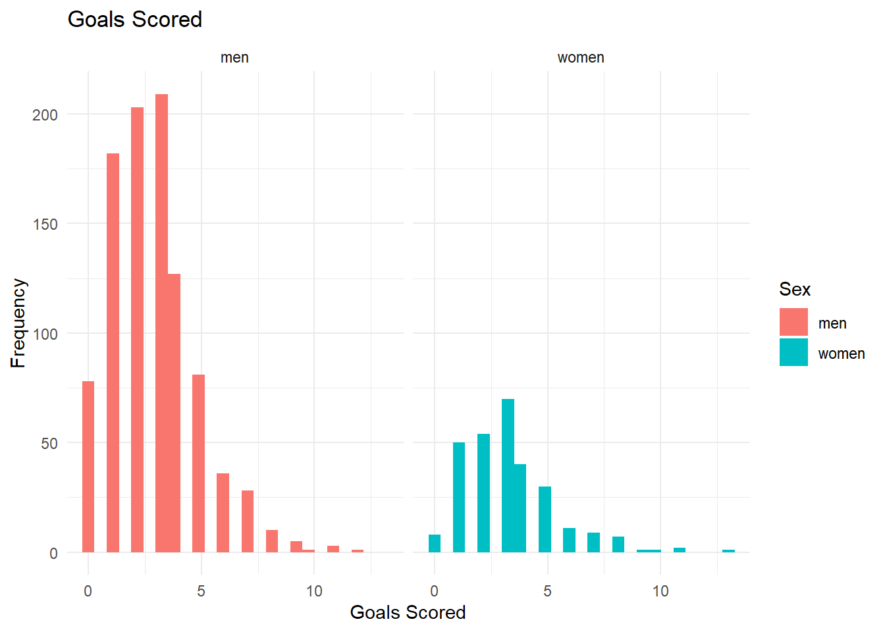

library(tidyverse)
library(ggthemes)
men_data <- read_csv("men_results.csv")
women_data <- read_csv("women_results.csv")
여자 국제 축구 경기에서는 남자 축구 경기보다 더 많은 골이 나온다는 것으로 알려져 있습니다.
공식 FIFA 월드컵 경기(예선 제외)에서 이 가설이 정말 옳은가 검정해보고자 합니다.
19세기 이후의 모든 남/녀 국제 경기의 데이터를 통해, 가설을 검정해보도록 하겠습니다.
가설은 다음과 같습니다:
\(H_0\) : 여자 국제 축구 경기의 평균 득점 수는 남자 경기와 동일하다.
\(H_A\) : 여자 국제 축구 경기에서 득점한 평균 골 수가 남자 경기보다 많다.
Load Data
head(men_data)# A tibble: 6 × 7
...1 date home_team away_team home_score away_score tournament
<dbl> <date> <chr> <chr> <dbl> <dbl> <chr>
1 0 1872-11-30 Scotland England 0 0 Friendly
2 1 1873-03-08 England Scotland 4 2 Friendly
3 2 1874-03-07 Scotland England 2 1 Friendly
4 3 1875-03-06 England Scotland 2 2 Friendly
5 4 1876-03-04 Scotland England 3 0 Friendly
6 5 1876-03-25 Scotland Wales 4 0 Friendly Filter Data
men_filtered <- men_data |>
filter(tournament == "FIFA World Cup") |> # filter FIFA World Cup
mutate(n_goal = home_score + away_score) |>
select(n_goal)
women_filtered <- women_data |>
filter(tournament == "FIFA World Cup") |>
mutate(n_goal = home_score + away_score) |>
select(n_goal)
men_filtered$n_goal <- as.integer(men_filtered$n_goal)
women_filtered$n_goal <- as.integer(women_filtered$n_goal) Check Normality
shapiro.test(men_filtered$n_goal) # does not fit normality
Shapiro-Wilk normality test
data: men_filtered$n_goal
W = 0.92403, p-value < 2.2e-16shapiro.test(women_filtered$n_goal) # does not fit normality
Shapiro-Wilk normality test
data: women_filtered$n_goal
W = 0.9003, p-value = 9.556e-13men_filtered |> mutate(Sex = "men") |>
bind_rows(women_filtered |> mutate(Sex = "women")) |>
ggplot(aes(x = n_goal, fill = Sex)) + geom_histogram(bins = 25) +
facet_wrap(~Sex)+theme_minimal()+
ggtitle("Goals Scored") +
xlab("Goals Scored") +
ylab("Frequency")
남/녀 모두 Normal Distribution을 따르지 않기에, t-test 대신, 비모수 방법인 wilcox.test를 통해 검정하도록 하겠습니다.
test_results <- wilcox.test(
x = women_filtered$n_goal,
y = men_filtered$n_goal,
alternative = "greater"
)
test_results
Wilcoxon rank sum test with continuity correction
data: women_filtered$n_goal and men_filtered$n_goal
W = 152307, p-value = 0.001681
alternative hypothesis: true location shift is greater than 0p-value가 0.05 보다 적으므로 대립가설을 수용할 수 있습니다.
즉, 월드컵 본선 경기에 한하여 여자 축구에서 골이 더 많이 나오는 것은 통계적으로 유의미한 가설입니다.